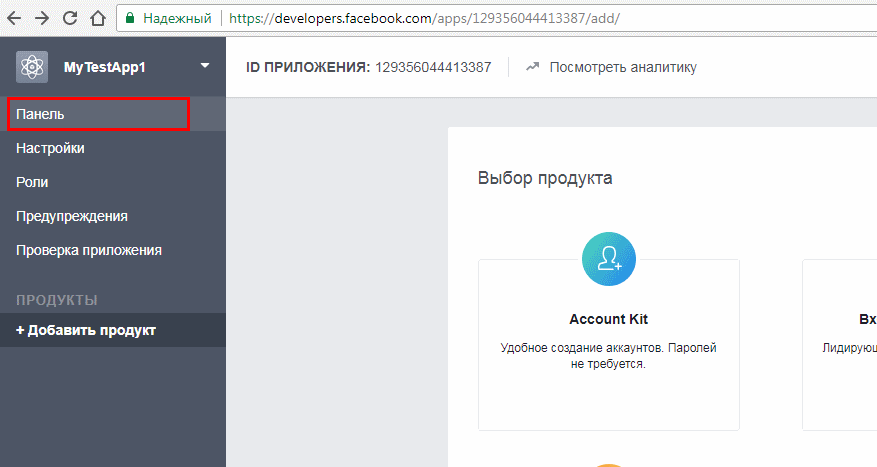
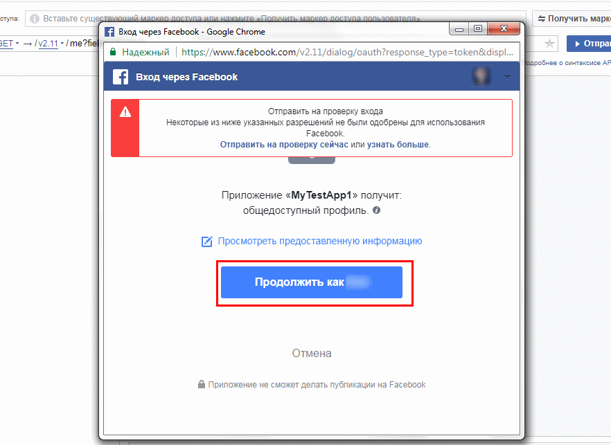

Kengaytmani sozlash¶
Xabarlarni ijtimoiy tarmoqdagi kanal va sahifalarga yuborish uchun avval sozlash menyusi orqali kirib, so'ralayotgan API ma'lumotlarni to'ldirishingiz kerak.
Ijtimoiy tarmoq API ma'lumotlarini olish va sozlash¶
Telegram¶
Telegram tarmog'ida kanalingizga kengaytma orqali xabar yuborilishini ta'minlash uchun, avvalo telegramda bot yaratib, yaratilgan botni kanalingizga admin sifatida qo'shishingiz lozim
Telegramda bot yangi bot yaratish¶
Telegram da bot yaratish uchun quyidagilarni bajaring:
- Telegram qidiruv joyiga
@botfatherdeb yozib(1), izlash tugmasini bosing va birinchi chiqqan natijaga kiribstarttugmasini bosing(2):

- Buyruqlar ichidan
/newbotbuyrug'ini tanlang yoki o'zingiz/newbotdeb buyruq yuboring:
- So'ngra, so'rovga asosan yaratilayotgan yangi bot ismini (1), botning foydalanuv nomini (2) kiriting, shundan so'ng sizga Bot token (3) taqdim qilinadi. Botning foydalanuv nomi takrorlanmagan hamda oxiri "bot" yoki "_bot" so'zi bilan tugashi kerak:

Kanal id sini aniqlash¶
- Kanal id si o'rniga
@<<kanal_nomi>>ni ham ishlatish mumkin. Kanal nomi bu yerda kanal linkining oxirgi qismi:https:// t.me/ <<kanal_nomi>>

Agar kanal ochiq bo'lmasa (private), u holda @getidsbot botini izlab toping, botga kirib /start ni bosing va kanalingizdagi biror xabarni "forward" qilib botga yuborsangiz, sizning kanalingiz id sini chiqarib beradi.

Yaratilgan botni kanalingizga admin sifatida qo'shing hamda olingan ma'lumotlarni kengaytma sozlamalariga kiriting.
Facebook¶
Facebook ijtimoiy tarmog'idagi sahifangizga kengaytma orqali xabar yuborilishini ta'minlash uchun quyidagilarni bajaring.
Facebook da dastur yaratuvchi akkountini faollashtirish¶
Facebook sahifasiga xabar chop etishda foydalaniladigan dastur yaratish uchun dastur yaratuvchi akkountini faollashtirishingiz kerak bo'ladi. Buning uchun quyidagi manzilga kiring va rasmda belgilangan tugmani bosing:
https://developers.facebook.com/docs/pages/getting-started#developer-account
Dastur nomini va pochta manzilingizni kiriting:

Dastur yaratilgandan so'ng quyidagi manzilga kirib, qizil bilan belgilangan joyni bosib, ro'yxatdan dasturingizni tanlang:
Rasmda ko'rsatilgan Получит маркер tugmasini bosib, eng quyidan Получит маркер доступа к Странице ni tanlang:

Kichik bir oyna ochilgandan so'ng, davom etish, so'ngra ok tugmasini bosing:

So'ng yana Получит маркер tugmasini bosib, eng quyidan dasturingizni tanlaysiz:

Yana o'sha menyudan rasmda belgilanga tugmani bosing hamda kichik oynadan ok ni tanlang:
Belgilangan joydan tokenni ko'chirib oling

Ko'chirib olingan tokenni hamda dastur ID sini quyidagi linkga qo'yib, o'sha linkni brauzerda oching:
https://graph.facebook.com/oauth/access_token?client_id=**<<Dasturingiz ID si>>**&client_secret=<your FB App secret>&grant_type=fb_exchange_token&fb_exchange_token=**<<ko'chirib olingan access token>>**
Dasturingiz ID sini esa quyida keltirilgan joydan olishingiz mumkin: